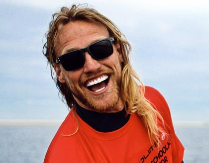

Founder · Instructor
Roel Oude Avenhuis
Born in Aruba, where his family runs the largest watersport business in the Caribbean. Grew up surfing, sailing and kiting, and is as good at motivating people as he is at reading the wind.